Gallery¶
Warning
In the examples below, “Phase Fields” and “Non-local” are EXTENDED usages of AMITEX_FFTP.
If interested in an EXTENDED usage (for various couplings), please contact us (contacts).
Crystal plasticity (1)¶
| 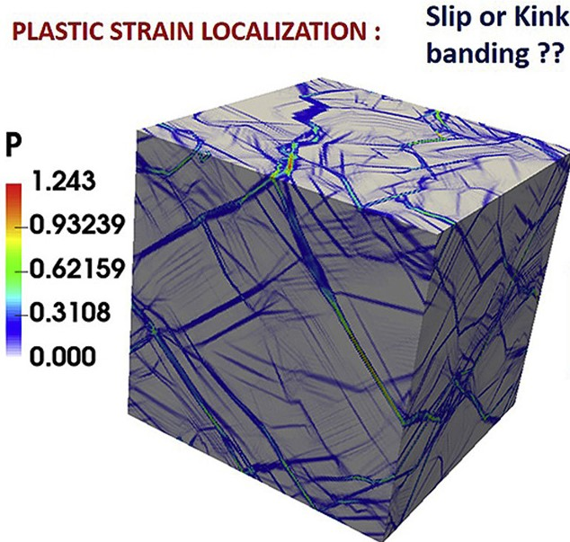 | 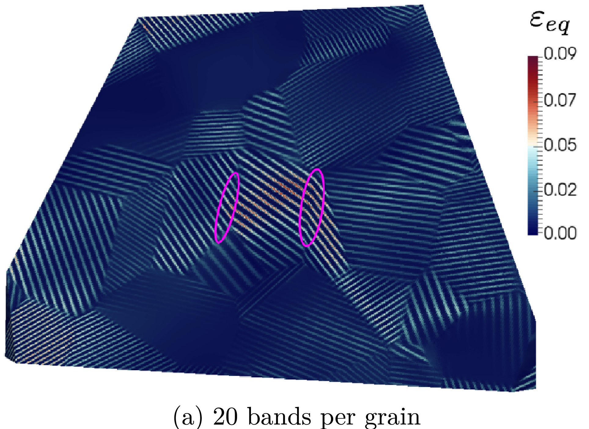 | 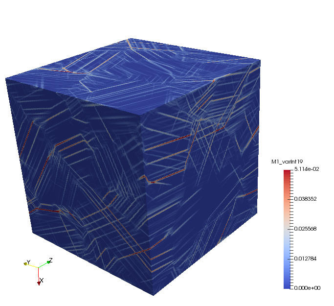 |
{kind=link}
{kind=link}
{kind=link}
(left) Intragranular localization induced by softening crystal plasticity
- Acta Materialia 2019, A.Marano, L. Gélébart, S. Forest, https://doi.org/10.1016/j.actamat.2019.06.010
(center) Non-linear composite voxels for explicit modeling of slip bands
- IJSS 2020, A. Marano, L. Gélébart, https://doi.org/10.1016/j.ijsolstr.2020.04.027
(right) Grain size effects and weakest link theory in 3D crystal plasticity simulations of polycrystals
- Comptes Rendus Physique (submission 2020), L. Gélébart,
Crystal plasticity (2)¶
| 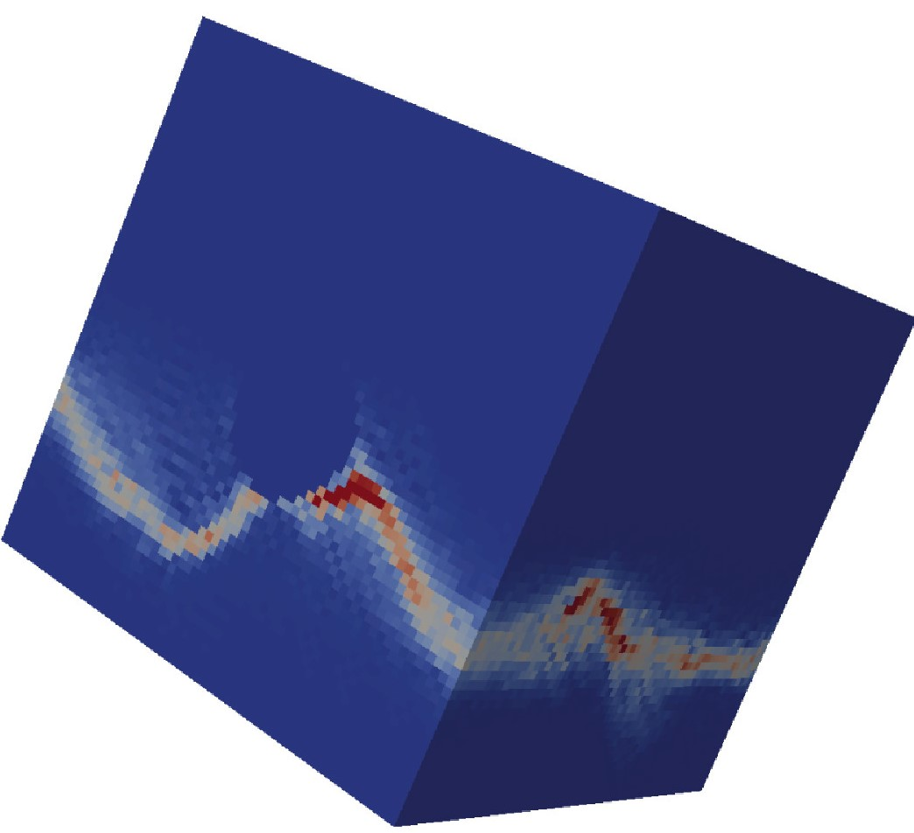 | 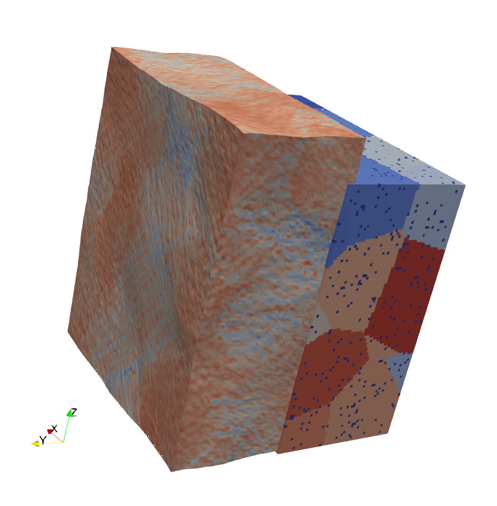 | 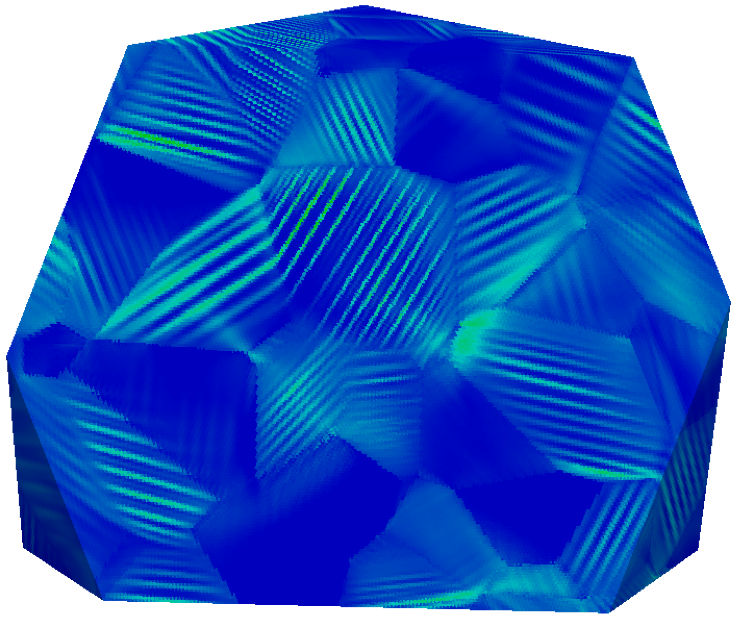 |
{kind=link}
{kind=link}
{kind=link}
(left) Porous single crystals
- JMPS 2019, J. Hure, https://doi.org/10.1016/j.jmps.2018.10.018
(center) Polycrystal with inclusions
- © F. Zhang, Shanghai Jiao Tong University, 2020
(right) Slip and kink bands formation : influence of strain gradient crystal plasticity (EXTENDED usage)
- JMPS 2020, A. Marano, L. Gélébart, S. Forest, (accepted, revision in progress)
Various composites (1)¶
| 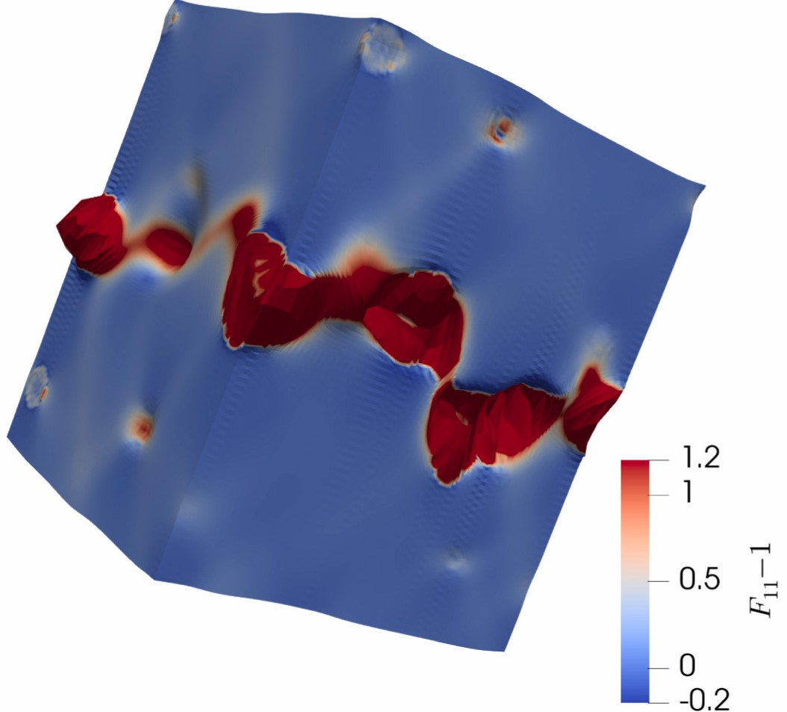 | 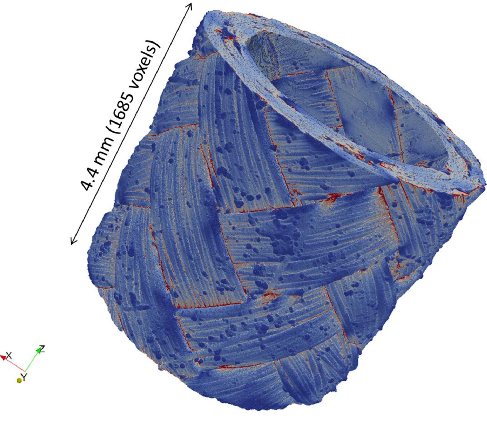 | 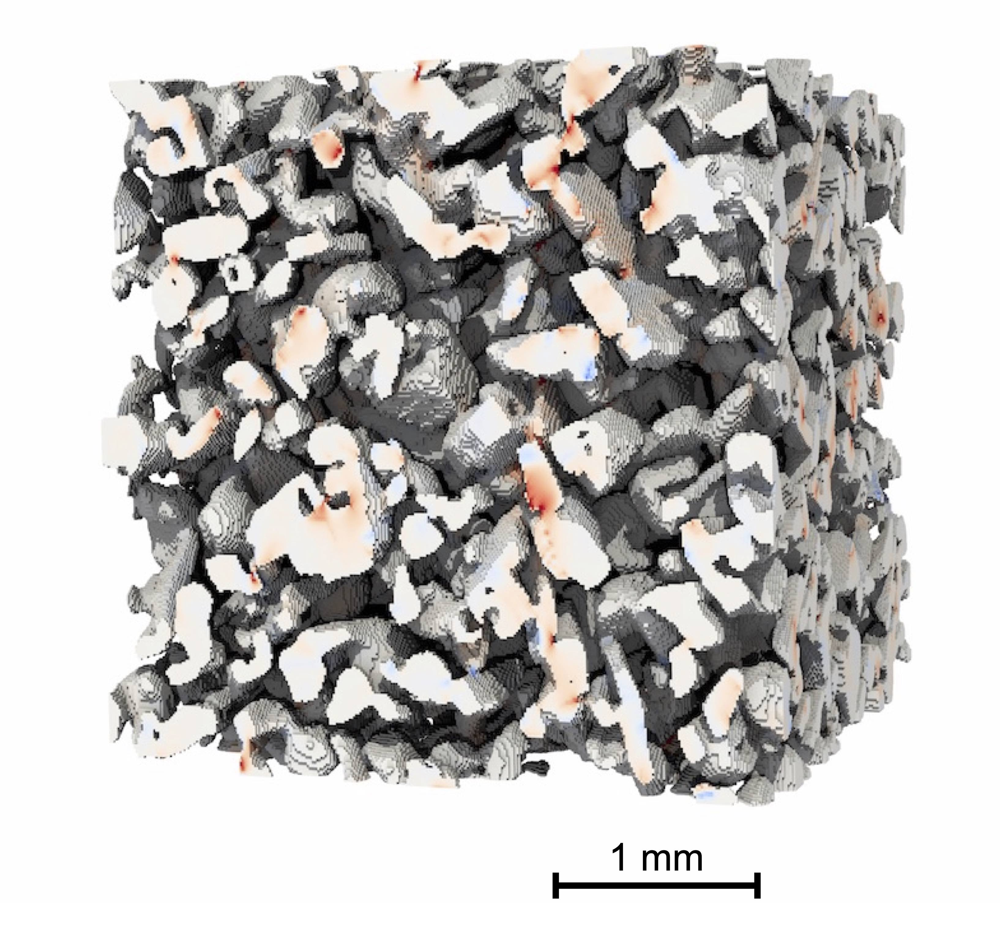 |
{kind=link}
{kind=link}
{kind=link}
(left) Finite strain behavior of random porous isotropic materials”
- Eur. J. Mech. 2019, J. Hure, https://doi.org/10.1016/j.euromechsol.2020.104143
(center) Large scale simulation of SiC/SiC composites from synchrotron X-ray tomography
- IJSS 2019, Y. Chen, L. Gélébart, C. Chateau, M. Bornert, C. Sauder, A. King,, https://doi.org/10.1016/j.ijsolstr.2018.11.009
(right) Simulation of snow
- © P. Hagenmuller (CNRM/CEN, Météo-France, CNRS)
Various composites (2)¶
| 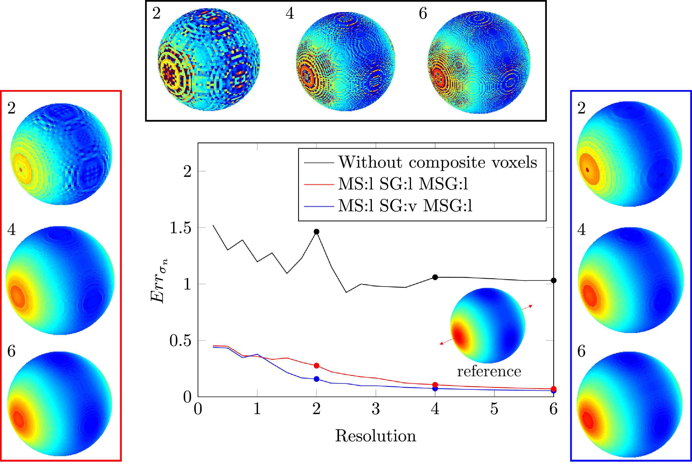 | 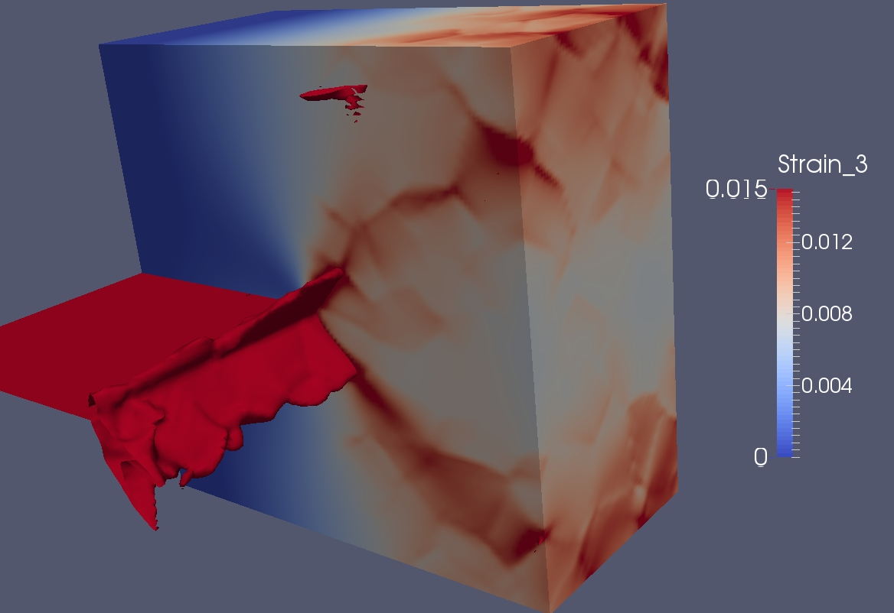 | 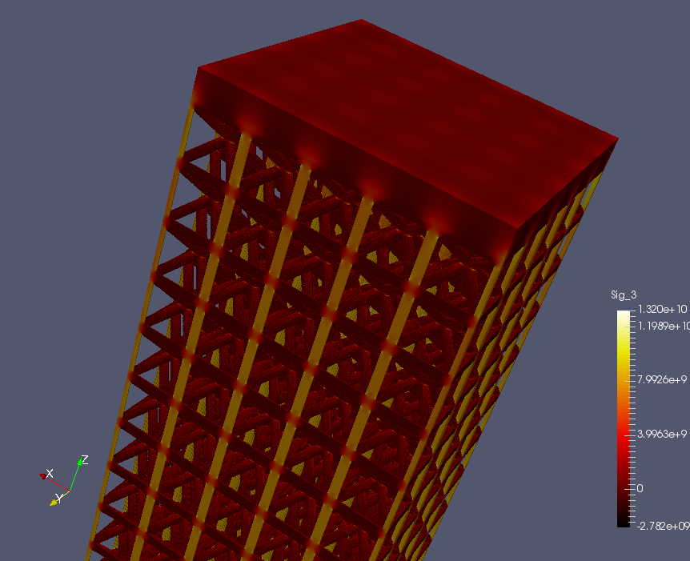 |
{kind=link}
{kind=link}
{kind=link}
(left) Evaluation of interface stresses in hollow microspheres/polypropylene composites
- IJSS 2020, R. Charière, L. Gélébart, A. Marano, https://doi.org/10.1016/j.ijsolstr.2019.08.002
(center) A crack in a polycrystal
- © L. Gélébart, 2015
(left) Simulation on lattice architectures (for fun!)
- © L. Gélébart, 2019
Beams and Plates¶
| 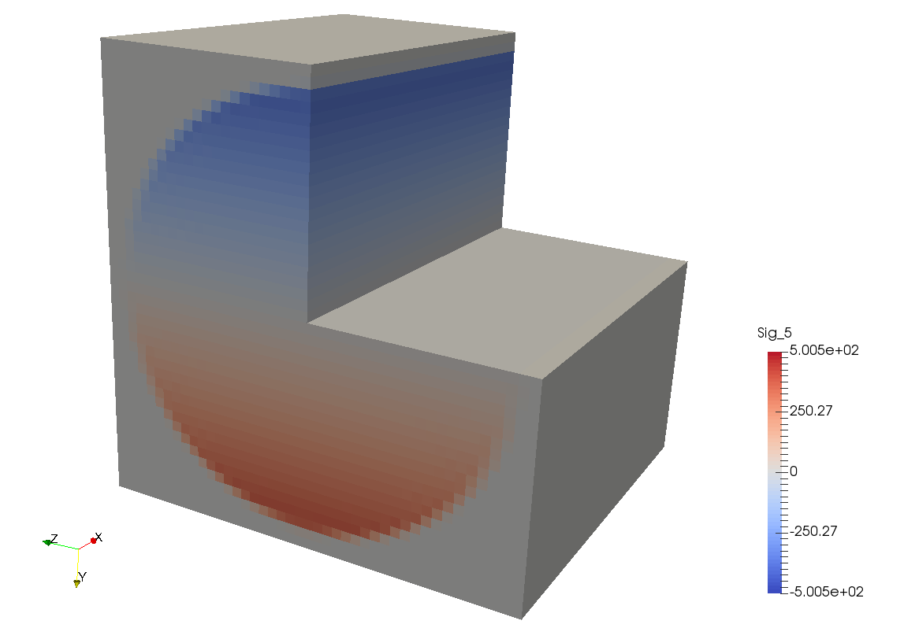 | 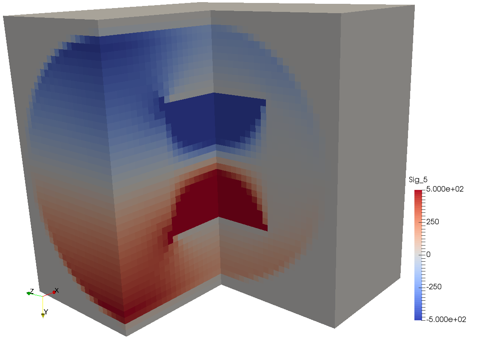 |
{kind=link}
{kind=link}
Torsion of a homogeneous (left) and heterogeneous beam (right)
- © JTCAM, L. Gélébart, submitted 2020, available on https://hal.archives-ouvertes.fr/hal-02942202
Phase field (EXTENDED usage)¶
| 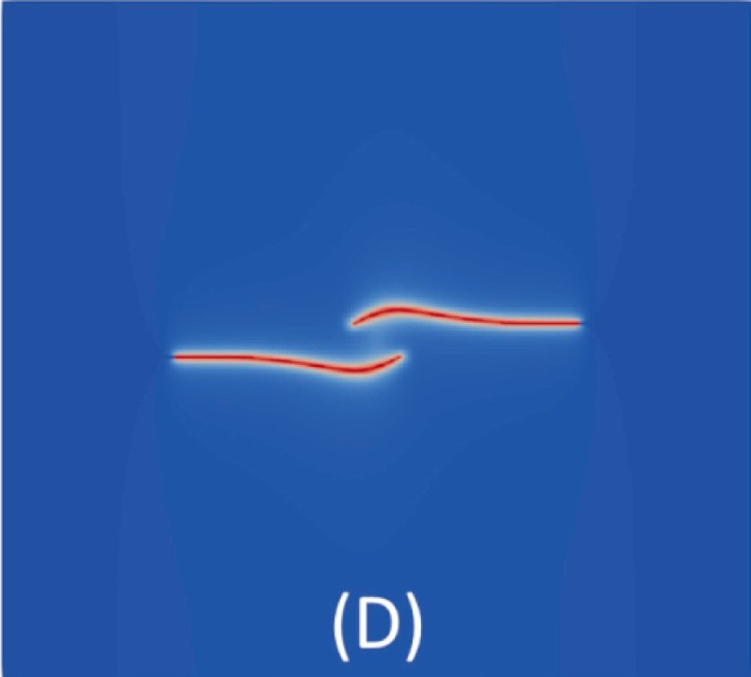 | 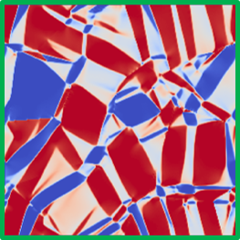 | 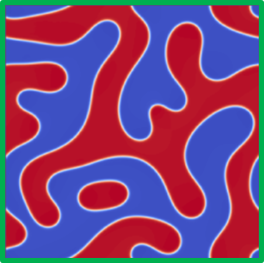 |
{kind=link}
{kind=link}
{kind=link}
(left) Phase field modelling of brittle fracture
- CMAME 2019, Y. Chen, D. Vasiukov, L. Gélébart, C.H. Park, https://doi.org/10.1016/j.cma.2019.02.017
(center) Phase field modelling of martensitic phase transformation
- © J. Boisse (LEMTA/Université de Lorraine),
- model from CMAME 2016, J. Kochman, https://doi.org/10.1016/j.cma.2019.02.017
(right) Phase field modelling of spinodal decomposition
- © J. Boisse (LEMTA/Université de Lorraine)
Dislocation Dynamics¶
TO BE COMPLETED